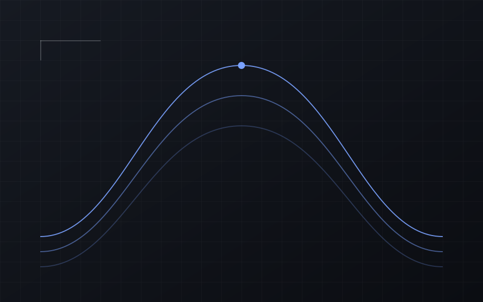
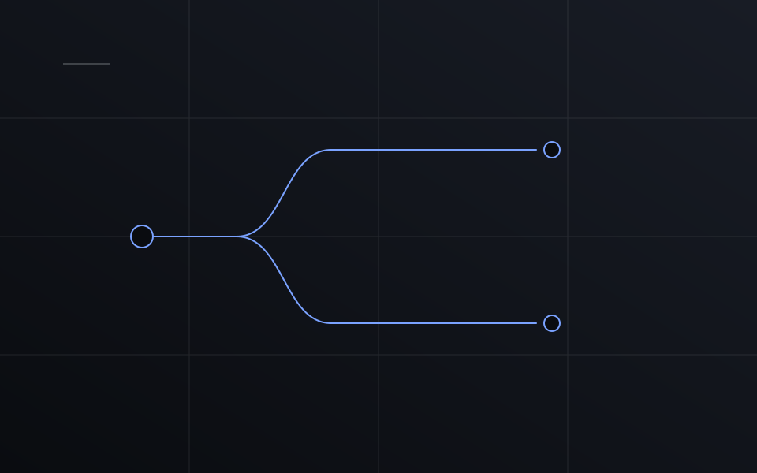
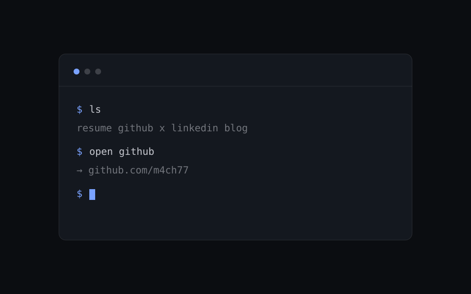
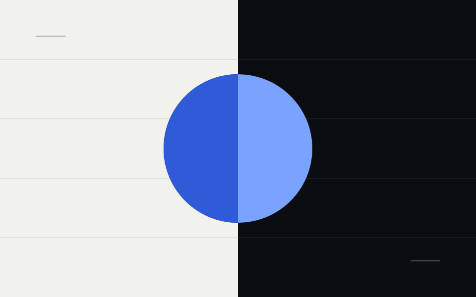
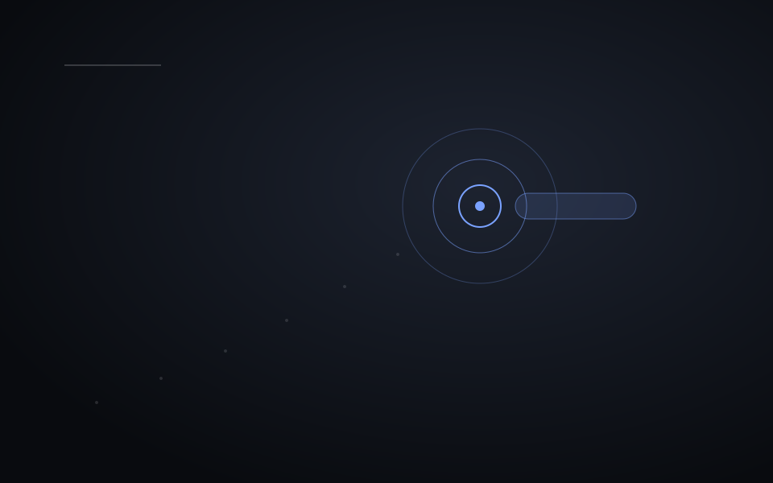

01 약력
Where I've Been
지나온 자리와 기록입니다.
- 2026 개인 사이트 · 서브도메인 정리 메인 허브부터 다시 세우는 중
- ---- 고려대학교 졸업 연도를 채워 넣으세요
- ---- 경력 자리 회사 · 역할 · 기간
기록
- 발표 발표 제목 자리 ----
- 수상 대회 · 순위 자리 ----
- CTF 팀 · 대회 자리 ----
-

목차와 등장 모션 확인용 템플릿 오른쪽 목차의 계층 표시와 스크롤 스파이, 그리고 섹션별 등장 모션을 한 화면에서 보기 위한 글입니다. -

빌드는 두고, 런타임 의존성은 0으로 마크다운을 쓰려면 빌드가 필요합니다. 그렇다고 방문자가 파서를 내려받을 이유는 없습니다. -

Notion 문법 확인용 글 Notion 에서 그대로 붙여넣은 문법이 제대로 나오는지 보는 글입니다. -

라이브러리 없이 만든 스크롤 모션 IntersectionObserver 와 rAF 만으로 어디까지 되는지, 그리고 어디서 멈춰야 하는지. -

두 개의 서피스로 만드는 다크 모드 색을 반전하는 대신 표면 단계만 바꾸면 생기는 것들. 토큰 설계 기록. - 글 전체 보기 m4ch77.com/writing
03 TIL
Today I Learned
매일 배운 것을 한 줄로 남깁니다.
- 연속
- 0일
- 최근 7일
- 0개
- 전체
- 0개
없음 많음
선택한 날 ----.--.--
- CSS 스크롤 스냅은 컨테이너에 종류를 걸고 자식에 지점을 건다. 화면보다 긴 섹션은 스냅에서 빼야 안쪽이 갇히지 않는다.
- CSS 100vw 는 스크롤바를 포함한다. 화면 끝에 무언가를 맞출 때는 clientWidth 를 재는 편이 안전하다.
- a11y 색 토큰이 정의되지 않은 자리에서 color 는 브라우저 기본값으로 떨어진다. 다크 모드에서는 그게 흰색이라 밝은 배경에서 사라진다.
- JS scroll-behavior: smooth 가 켜져 있으면 scrollTo 로 만든 애니메이션과 싸운다. 직접 굴릴 때는 auto 로 잠깐 내려야 한다.
04 FAQ
Frequently Asked Questions
여기에 없는 건 메일로 물어보시면 됩니다.
닉네임 m4ch77은 어디서 왔나요?
독일어로 '힘'을 뜻하는 말, 그리고 마하(Mach)에서 왔습니다.
글은 어디 있고, 레쥬메는 언제 열리나요?
글은 이미 /writing 에 있습니다. 레쥬메가 그다음이고 resume.m4ch77.com 로 나갑니다.
이 사이트 소스는 공개되어 있나요?
GitHub에 공개되어 있습니다.
터미널은 실제로 동작하나요?
네. 첫 화면 오른쪽에 있습니다. ls 로 목록을 보고 open <이름> 으로 이동합니다. ⌘K 빠른 이동과 같은 목록을 씁니다. 숨은 명령어도 하나 있습니다.
보안 이슈를 발견했습니다.
고맙습니다. 메일로 알려주세요. 공개 전에 먼저 연락 주시면 감사합니다.